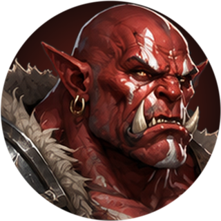
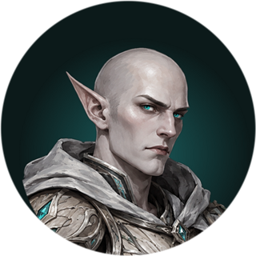
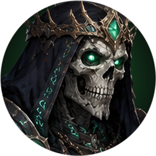

Лор
Арена на перекрёстке миров
Там, где сходятся четыре мира — красные каньоны, священные рощи, замки под кровавой луной и мёртвые некрополи, — стоит Арена. Никто не помнит, кто её построил. Её камни старше любого из народов, а ворота открываются сами, когда приходит время боя.
Народы давно поняли: войны разоряют всех, а Арена решает спор быстро. Здесь кланы делят земли, вожди доказывают право вести, а простые бойцы добывают славу, которую потом поют у костров. Здесь нет лекарей, нет наследных доспехов, нет купленной силы. Каждый выходит на песок таким, каким его сделали годы учения. Решает только бой.
«На Арене не спрашивают, кто твой отец. Спрашивают, устоишь ли ты до конца раунда».
Кто такой Аренарх
Слово «аренарх» значит «владыка арены». Так называют бойца, который выиграл больше всех за сезон. Его статую ставят в центре Зала снаряжения, у подножия которого собираются бойцы перед выходом. Пока стоит статуя, имя Аренарха знают все четыре мира. Когда сезон кончается, на постамент поднимается новый.
Четыре народа

Орки
Краснокожие исполины красных каньонов. Для орка Арена — священное место: здесь растут в чине, решают споры кланов и добывают славу. Орки сильны и упрямы и не знают отступления. Их воины ведут за собой целые отряды, а шаманы зовут бурю с небес каньонов.

Эльфы
Стройные и быстрые стражи священных рощ. Они слышат духов леса и черпают силу из бирюзовых кристаллов, растущих в скалах. Эльф бьёт издалека и не даёт врагу подойти: охотник считает Арену ещё одними угодьями, а маг подчиняет себе огонь, воду и землю.
Вампиры
Бледная знать готических замков под кровавой луной. Вечность научила их терпению: они ждут, пока враг ошибётся, а потом берут его кровь и силы. Ассасины приходят из тени, лорды крови — под полной луной.

Восставшие
Восставшие из могил владыки древних некрополей. Смерть для них лишь начало: они повелевают душами, тленом и проклятиями. На Арену Восставшие приходят за новыми слугами — каждый павший здесь может однажды встать снова.
Восемь путей
Воин
Мастер ближнего боя. Врывается в гущу схватки рывком и держит её. Палач рубит двуручным топором, Налётчик идёт с копьём и щитом, как древние фаланги каньонов, Костолом закрывается щитом и прикрывает своих.
Шаман
Повелитель бури. Провидец бьёт цепными молниями и ставит тотемы, Берсерк врывается с двумя топорами в ярости предков, Хранитель держит строй молотом и щитом.
Хищник
Охотник, для которого Арена — просто ещё одни угодья. Держит добычу на расстоянии скрытой сетью и кувырками. Стрелок бьёт тяжёлым болтом, Следопыт осыпает стрелами на бегу, Страж выходит вплотную с шестом.
Маг
Повелитель стихий. Один маг сжигает врагов огненными шарами, другой сковывает водой, третий повелевает самой землёй и сам становится твёрдым, как гора. Говорят, в высшей точке силы маг поднимается над землёй и все три стихии слушаются его разом.
Ассасин
Убийца из тени. Аспид травит издалека отравленными болтами, Фантом подкрадывается с кинжалами и бьёт в спину, Дуэлянт выходит один на один с парными мечами — и исчезает раньше, чем враг поймёт, откуда пришёл удар.
Лорд крови
Кровопийца. Потрошитель рубит серпами на цепях и открывает раны, Маг крови колдует издалека, Рыцарь бьётся двуручным мечом. Тот, кого укусил лорд, после смерти может подняться вурдалаком и служить ему до конца раунда.
Некромант
Повелитель мёртвых. Каратель с посохом насылает духов, Еретик поднимает скелетов-лучников, Жнец собирает души косой и снимает жатву с ослабевших.
Чернокнижник
Знаток запретных кодексов. Пожиратель насылает порчу и вытягивает жизнь, Культист вешает на врагов метки проклятий, Призыватель с косой демонолога зовёт себе на помощь демона.
Легенды Арены
В каждом народе поют о бойцах, которые однажды перевернули бой целиком. Эти песни стали ультами — силой, которой боец может воспользоваться раз в две минуты.
Красная Орда. Вождь орков однажды позвал свой клан прямо на песок, и отряды пронеслись по арене волнами. С тех пор красные полосы на земле значат одно: беги.
Великая буря. Шаман, потерявший всех союзников, позвал духов грома. Молния перескакивала с врага на врага, и выжили только те, кто разбежался.
Дикая охота. Охотники эльфов трубят в рог, и Арена становится лесом в час облавы: дождь стрел, арбалеты в центре и копья с неба.
Катаклизм. Маг поднимается над ареной, и земля трескается, вода закручивается в водоворот, огонь бьёт из трещин. Полсекунды тишины — и взрыв.
Мрак. Ассасин гасит свет. Из стай летучих мышей выходят призраки и бросаются на того, кого назвали Жертвой.
Судная ночь. Лорд крови взлетает под кровавую луну и вершит суд: кто к концу ночи окажется ниже красной черты, тот погибнет.
Апокалипсис. Некромант ставит в центре надгробие, и мёртвые встают по всей арене. Пока камень цел, они поднимаются снова.
Армагеддон. Чернокнижник открывает Врата ада, и демоны выходят один за другим, пока врата не разобьют.